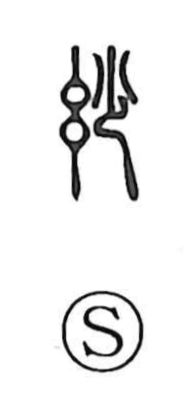

妙

Kun: tae | On: myo
marvelous ・ exquisite ・ beautiful ・ excellent ・ strange
Explanation
妙 combines 女 with 少 as its sound element. The 少 family includes words for what is minute or fine, such as 眇 and 秒. In 妙, this fineness becomes refinement and excellence.
The character describes something exquisitely good: beautiful in appearance, finely accomplished, or subtle in detail. A quality may be so delicate or profound that it is difficult to express fully. From that elusive excellence also comes the sense of something marvellous or strangely remarkable. The meanings gather around a fineness that ordinary description does not quite exhaust.